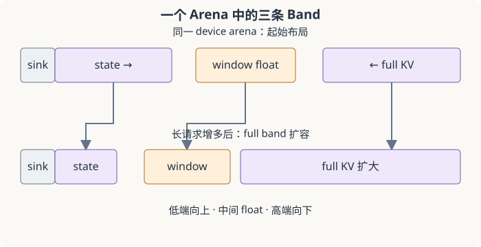
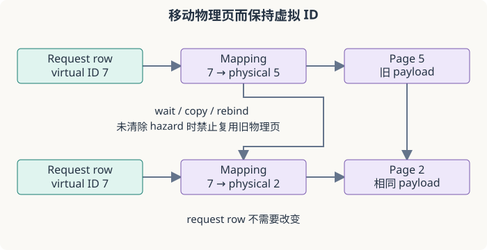

第 39 章 · SGLang 长上下文系统
Unified Memory：共享 Arena、动态 Bands 与安全 Compaction
如何让 Hybrid 模型的 full KV、window KV 和 recurrent state 动态共享显存？
如何让 Hybrid 模型的 full KV、window KV 和 recurrent state 动态共享显存？ 本章从具体反例出发，再追踪运行时数据结构与正确性条件。
1. 固定比例带来的 stranded memory
第32章静态分池中，短请求很多时 state pool 先耗尽；少量极长请求时 full KV 先耗尽。若固定 state/full split 不合适，GPU 有空闲字节却不能再接纳请求。Unified Memory 让这些对象分享一个 device arena；它不是 CUDA Unified Virtual Memory 自动分页。
2. Declare → Plan → Size → Build
KVLayerDecl 描述 geometry 与 lifetime（Full、Window、State）；plan_kv_storage 合并同类 allocation unit 并排序；size_plan 预算固定开销、state slots、window rows 和 full token targets；build_kv_storage 创建 KVArena、typed views、ChainAllocator、RequestTable。低端 state 向上长，高端 full 向下长，window float 位于中间。

3. 需求向量代替单个 free token count
设各 band 单元字节为 b_i，需求为 d_i，当前已占用字节 L，固定开销 F，arena 总量 M。下式只是必要条件，还要满足 alignment、virtual IDs、fixed rows、pending pages 和各 PP stage 的布局可达性。例：总 20 单位，state 需求 4、window 5、full 9，另固定 2，恰好填满；若有不可移动障碍仍可能无法实际放置。
4. 虚拟 ID 与 lazy compaction
RequestTable 只存虚拟 ID。full band mint 虚拟 pages，window 对 owner 的虚拟 pages 绑定 physical pages（未绑定的读 sink）；state 有独立 slot ID space。释放留下 holes；移动 live page 后只更新 mapping，request rows 无需重写。先用 holes，再 settle pending batches，必要时扩展 frontier；NO_MOVE、FLUSH_ENDS、RELAYOUT 按可行性逐步升级。

5. 为什么 free 不等于立即可写
调度线程释放页面时，前一 forward、host copy 或网络 transfer 可能仍读旧字节。PageUsage 记录 consumer/hazard：forward stream 顺序、schedule copy 等待 event、network 等待 host 或退休、fixed page 不移动。新网络 receive ID 在相关 forward 退休前不能发布。只判断 free-list membership 会造成数据竞争。
6. Admission 与 PP stage 容量一致
ChainAllocator 的具体 demand pricing 依据 host snapshot；统计中的 available_size 仅估算，不应作为 admission 的最终结论。PP 各 stage 有不同 geometry，但需支持同一 sub-pool 和 page size；所有 stage 都能满足才可接纳。无法获得后续释放的 unschedulable 请求不应永久排队。
7. 配置与性能反例
--enable-unified-memory 只用于受支持 hybrid models，隐含 page-major layout。当前 docs 明确排除 plain full-only、DeepSeek V4 等，具体 backend 还要审核 strided views。Compaction 有搬运成本和等待，反复 workload shift 可造成延迟尾部。对比静态分池和 arena 的 occupancy、admission failures、relief plan 次数、move bytes、ITL 与 TTFT。
8. 交互：机制状态与反例
Unified Memory 教学实验
固定池失败：总 12 units：state 固定 4、full 固定 8；需求 state6/full4，state 不足。
共享 Arena：忽略 alignment 与固定开销，6+4≤12；两个 bands 可重新分配。
不可移动障碍：存在 fixed/pending 页时，仅总量满足不够；不能覆写或移动直到 hazard 清除。
教学模型仅验证机制与反例，不代表真实 GPU benchmark。
9. CPU 最小实验
使用 Python 标准库验证上文核心不变量，下载 unified_arena.py。源文件包含正例、异常或边界断言。
python3 examples/unified_arena.py实验不运行真实 SGLang GPU serving、collectives、网络传输或模型训练。
10. 源码阅读路线与证据
固定上游快照 b1ef3a60797aa6c29bcfa4cc3bc135dd2f19ec22。论文贡献、运行时实现和教学推导分开标注。
- What changes / Sub-pools and bands：Unified memory uses one device arena with runtime-resizable bands; virtual IDs decouple request rows from physical pages.
- From declarations to an arena / Ids：Layer declarations, storage plan, sizing and build establish sub-pools, request table and virtual-to-physical maps.
- Capacity and admission / Allocation：Concrete vector demand is tested on host-side snapshots; NO_MOVE, FLUSH_ENDS, RELAYOUT differ in rearrangement cost.
- ChainAllocator.pricing_snapshot / plan_in_place：Allocator snapshots and in-place plans separate admission reasoning from physical allocation.
- Consumer / Hazard / CLEARANCE：Page reuse hazards distinguish forward, copy, network and fixed rows; ordering depends on consumer.
- Supported models：Feature is limited to supported hybrid models and audited layouts/backends; not plain full-only attention or DeepSeek V4.